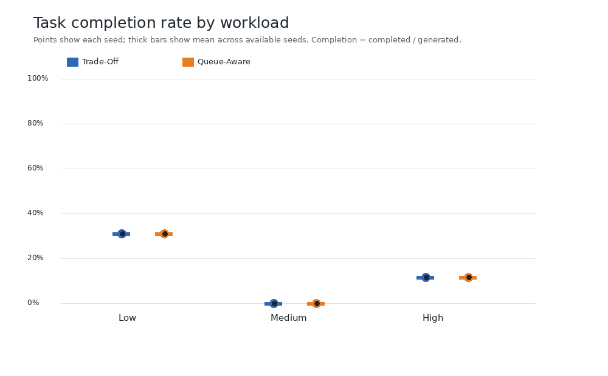
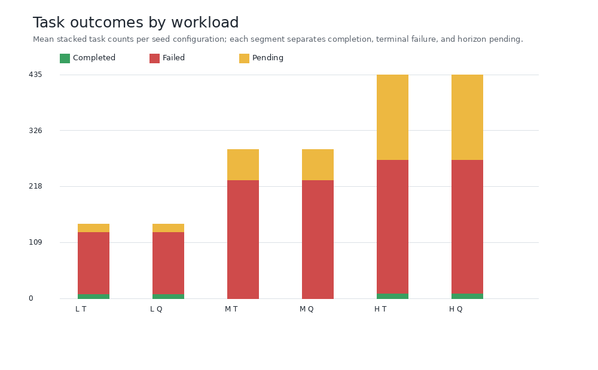
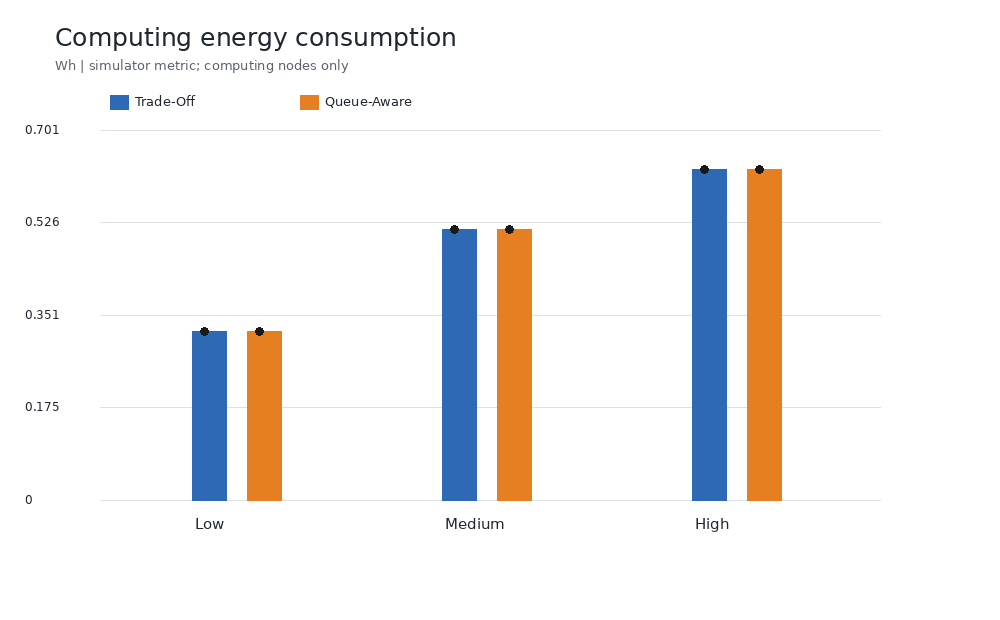
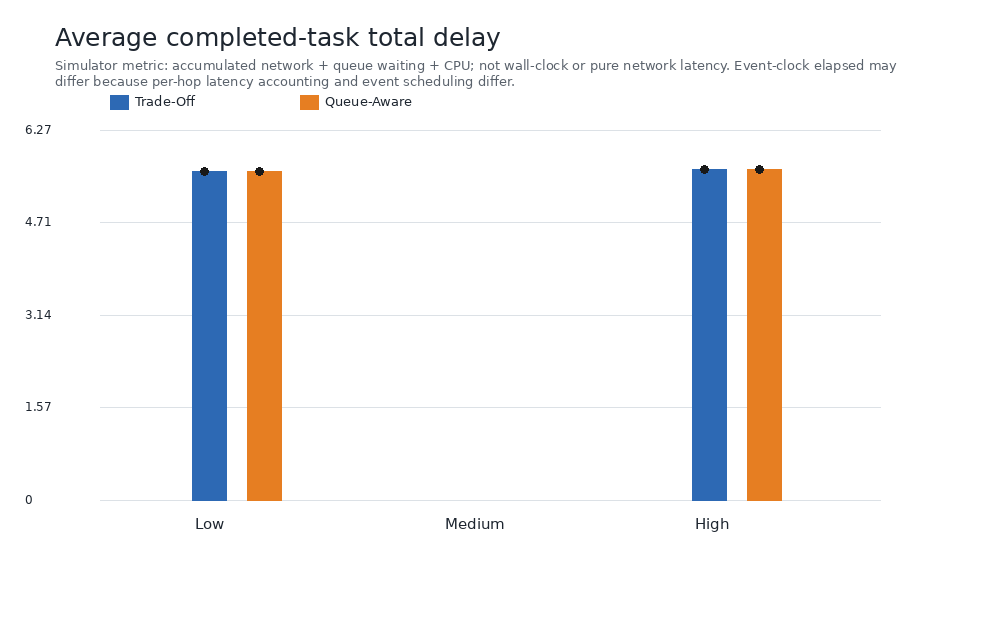
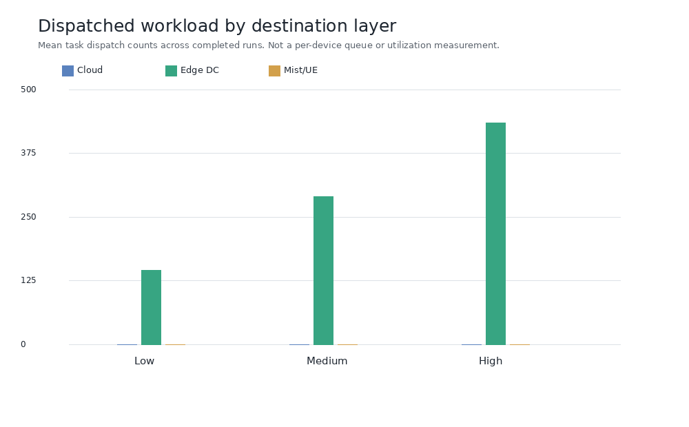

Charts and tables use simulator CSV-derived metrics in aggregate.csv. Quick mode is preliminary and not statistically conclusive.





Seed-level aggregate CSV · Aggregate summary CSV · Experiment report · Experiment configuration and status